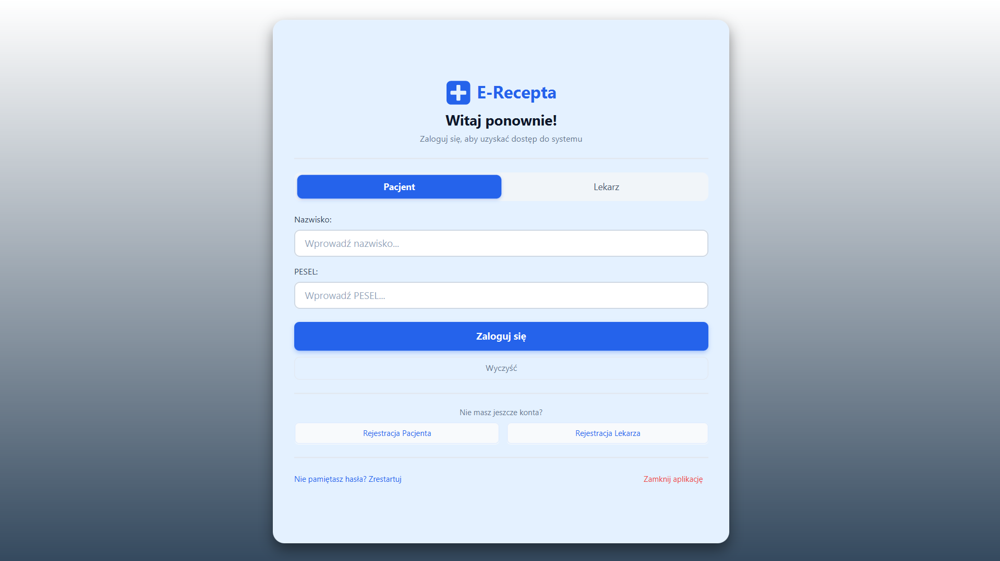

E-recepta.
Electronic prescription management
A desktop application connecting patient and physician workflows: prescriptions, medical history, and appointment scheduling.
- Patient and physician workspaces
- Prescription history and renewal requests
- Appointment booking and visit records
Collaborative student project. Independent of Poland’s official e-prescription system.

ACTUAL APPLICATION SCREENSHOT
Click to enlarge
INTERFACE
JavaFX desktop
FOCUS
Connected workflows